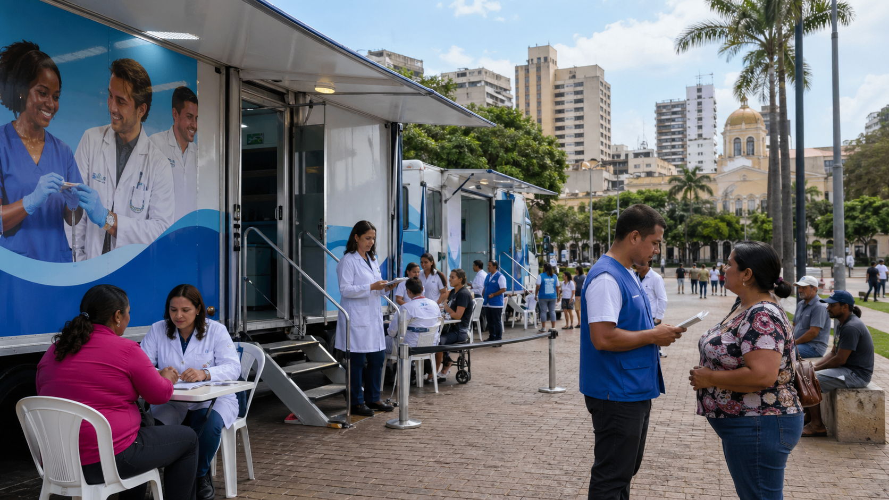

Mutirão de exames em unidades móveis
Saúde em Ordem: Transparência Total
Acompanhe, em uma página pública e direta, os números do atendimento, os documentos do convênio, a localização das carretas e os esclarecimentos sobre o programa.
Zerômetro
A fila diminuindo em tempo real
Mais que números, são 63 mil cidadãos de Rio Preto voltando a ter esperança.
0% da meta cumprida
Calculando avanço do mutirão
A verdade nos documentos
Transparência para consulta pública
Os principais arquivos ficam em destaque para que qualquer cidadão confira a base do convênio.
Onde estão as carretas?
Seis unidades móveis em operação
Clique nos pontos do mapa para ver especialidade, endereço de referência e status.
O que o preço realmente cobre?
Não é só o exame. É a solução completa.
O valor médio precisa ser lido junto com a estrutura mobilizada para retirar a pessoa da fila.
Unidades móveis prontas para atendimento descentralizado.
Diagnóstico com qualidade técnica e padronização.
Profissionais médicos, técnicos e apoio operacional.
Materiais, manutenção, energia, limpeza e logística.
Resultado organizado para prontuário e continuidade do cuidado.
Encaminhamento para fechar o ciclo do atendimento.
O preço da omissão custa mais.
Judicialização, agravamento de doenças e internações evitáveis podem custar muitas vezes mais aos cofres públicos do que resolver a fila com rapidez, escala e controle.
Voz do cidadão
Histórias por trás dos números
Espaço preparado para vídeos curtos de pacientes reais após o atendimento.
Esclarecimentos à CPI
Perguntas frequentes
Respostas objetivas para os principais pontos de investigação e fiscalização.
Por que Santa Casa de Casa Branca?
Porque é uma entidade filantrópica qualificada, com experiência em unidades móveis e disponibilidade imediata para executar o atendimento em escala.
Por que a rede local não assumiu o serviço?
O hotsite destaca a negativa formal da rede local, apontando falta de capacidade técnica imediata para atender a demanda no prazo necessário.
O pagamento é adiantado?
O convênio segue cronograma de desembolso vinculado às metas de atendimento, com fiscalização diária da Secretaria de Saúde.
Como a população confere o atendimento?
O painel público exibe exames realizados, pessoas retiradas da fila, dias de operação, localização das unidades e documentos de referência.
Consulta do cidadão
Onde está meu agendamento?
Área preparada para integração com o sistema de regulação municipal.